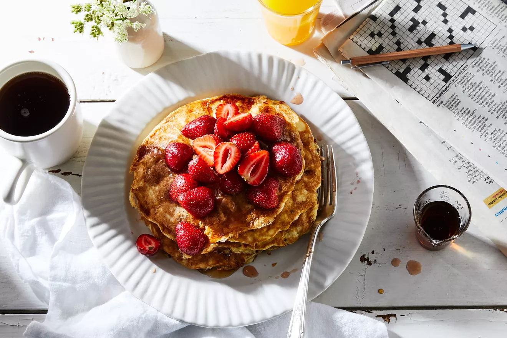

Cottage Cheese Pancakes

When to make these pancakes
"These are pancakes for people who don't like pancakes." High protein pancakes!
Makes: 4 pancakes
Ingredients
- 1 cup strawberries, halved
- 2 tablespoons maple syrup, plus more for serving
- 2/3 cup cottage cheese
- 2 large eggs
- 4 teaspoons granulated sugar
- 1 pinch kosher salt
- 1/4 cup plus 2 tablespoons all-purpose flour (or whole wheat/hazelnut mix)
- 1 teaspoon baking powder
- (optional) cinnamon, vanilla extract, cardamom (add to berries)
- Butter for frying
Instructions
- In a small bowl, stir together the strawberries and maple syrup
and set aside to macerate.
- Meanwhile, prepare the pancakes: Whisk together the cottage
cheese, eggs, sugar, and salt until smooth and fluffy. Stir in the
flour and baking powder last.
- Heat a nonstick skillet or griddle over medium heat. Melt about
a teaspoon of butter and pour in 1/3 cup of the pancake batter. Cook
2 to 3 minutes on the first side, then flip and continue cooking 1
to 2 minutes, or until cake has set. Plate, then continue with the
rest of the batter (you should get exactly four pancakes out of this
recipe).
- Serve with strawberry maple syrup either on the side or on
top.
Back to more pancake recipes!